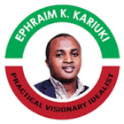

 I hail from Kenya and defined as a Pan-Africanist angling at making Africa the preferred continent - amongst many other regions - to live, invest and prosper. Africa is a resource-rich (Natural and human) land. The biggest mines (For instance, by 2012, Africa accounted for 56% of diamond production across the globe) are buried in our motherland. Additionally, it is estimated that there shall be 2.4 billion Africans by 2050. Imagine that! Do the math and calculate the number of schools and hospitals that we can erect if we properly manage our proceeds from diamond alone. How about prudent utilization of resources from our diverse pools of cash-cows by merely eliminating corruption? Chances are that infant deaths will significantly reduce; and a healthy, prosperous and educated population shall emerge. Did you know that by 2100 Africa will account for half of the entire global population growth? Well, now you know. Mama Africa is emerging, and if properly harnessed, better yields are promised to Her sons and daughter. We are at a crossroad. A youthful, innovative, resourceful, and ambitious people want what's rightfully theirs: a corruption-free continent with the future promised to none, but those who are ready to dirty their hand and uphold integrity. That's what I desire. And I purpose and intend to deliver such a future to my kids and grandchildren. ... click here for my full bio